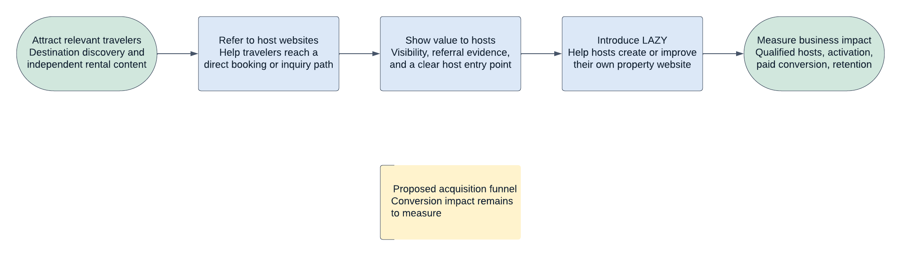

Prototype
17,000
Places in the prototype handed to a system administrator.
AI-powered rental discovery. A marketing driver for LAZY.
Explore Pleasant Street LAZY case studyI built Pleasant Street to help independent vacation-rental hosts become discoverable and create an acquisition channel for LAZY, my website-building product for hosts. Travelers find accommodation and reach its operator directly; hosts gain a reason to invest in their own web presence.
17,000
Places in the prototype handed to a system administrator.
170,680
Places vetted through the ongoing research workflow.
30states
20 states remain. The project is still in flight.
6workers
Concurrent workers with saved evidence and recovery.
From prototype to production: I built the prototype with 17,000 places, handed it off to a system administrator, then built the pipeline so discovery and vetting could continue in production.
Still in flight. Nationwide research takes time. Catalogs must be searched, identities reconciled and incomplete evidence revisited. The project has now vetted 170,680 places across 30 states, with 20 states remaining.
My role: founder, product strategy, UX and service design, prototype, AI research and evaluation workflow, and production pipeline.
A useful discovery product creates a relevant audience for LAZY.
LAZY gives hosts a website of their own. Pleasant Street addresses the connected problem: helping travelers find those independent rentals. I designed the two products around the same host community, linking consumer discovery with a concrete need for a useful property website.
The intended acquisition path is destination discovery, visits to independent host websites, visible value for hosts, and qualified interest in LAZY. The commercial goal is host acquisition and activation; the inventory count measures research scale.

Scroll horizontally to read the full diagram.
The benchmark set includes the major rental marketplaces and large accommodation aggregators. Their published scale figures use different definitions: hosts, properties, accommodations and users are not interchangeable measures of market share.
| Platform | Published scale | Model | Implication for Pleasant Street |
|---|---|---|---|
| Airbnb | 5.5M+ hosts | Marketplace | An established global brand and booking ecosystem. Pleasant Street needs a specific reason for travelers to search elsewhere. |
| Booking.com | 4.2M alternative-accommodation properties | Online travel agency | Broad selection is well served. Destination depth and access to independent operators are more relevant areas to develop. |
| Vrbo / Expedia | 2.5M bookable alternative accommodations through Vrbo | Whole-home marketplace | Direct audience overlap in North American vacation homes. Cabins and family stays alone do not differentiate the product. |
| HomeToGo | Millions of homes; 15M+ annual travelers | Discovery + host software | A close strategic comparison: consumer discovery and supplier software already coexist in a large business. |
| cozycozy | 20M+ accommodations; 100+ merchant sites | Metasearch | “Everything in one place” is crowded positioning. Pleasant Street needs a more selective promise. |
| Holidu | 100M+ annual users; 60K+ software properties | Discovery + host services | Another established connection between traveler demand and host tools. AI and software alone are not unique advantages. |
Airbnb, Booking.com and Vrbo figures: September 2026 disclosures. HomeToGo, cozycozy and Holidu: company-published website figures reviewed November 2026.
Google Vacation Rentals also offers free direct-booking referrals. Houfy, with 100,000+ listings, is a closer direct-booking competitor. Direct access to hosts is useful, but not unique.
My positioning: discover existing independent supply, build useful destination coverage, preserve clear operator and source relationships, and connect that visibility to LAZY’s website service. The execution and focus matter more than a claim to have the largest catalog.
Preserve judgment across models, workers and production handoffs.
I developed a division of labor through hands-on use. ChatGPT was more useful to me for strategic framing and vetting: structuring the problem, challenging assumptions and judging evidence against the product’s goals. Claude was more useful to me for search and discovery: working through fragmented rental inventories and collecting candidate properties.
These are perceived strengths within my working process, rather than a universal benchmark. The supplied Python harness currently launches Codex CLI workers; the ChatGPT–Claude division describes my broader working method.
I treated the research as evidence-grounded information extraction, entity resolution and decision orchestration. A direct-booking website does not establish owner operation. Several URLs do not establish several homes. A generic pets selector does not establish the property’s pet policy. Source scope and property identity must survive every handoff.
I defined separate states for discovered candidates, verified websites, holds, unavailable sources and exclusions. Unknown values stay unknown. Photographs require attribution to the specific property; operator-wide information applies only where that relationship is supported.
A recoverable AI pipeline behind a deliberately friendly interface.
The harness is the control system around the AI workers. It determines their assignments, what they must save, how progress is recognized and what happens when an attempt stalls.
It plans a state’s destinations, searches source catalogs, reconciles URLs and aliases, removes known inventory and reuses saved vetting decisions. Remaining candidates receive a bounded vetting assignment. The output is a review preview containing ready records, holds, exclusions and coverage gaps.

Scroll horizontally to follow the full handoff.
The Python harness implements bounded concurrency, structured JSONL event ingestion, schema and value checks, checkpoint recovery, alias-based entity reconciliation and an exclusive run-directory lock. The production workflow uses six concurrent workers; vetting batches contain 20 candidates.
An attempt that produces no new valid saved evidence for 15 minutes receives one automatic recovery attempt. A fresh worker inherits the saved history. Remaining blocked jobs stay explicit while other work continues; an independent monitor reads the progress record and checks the supervisor process.
Progress depends on distinct, valid evidence events. Repeated prose does not reset the clock. Structural validation checks the record’s required contract; factual verification still depends on inspecting the underlying sources. That distinction keeps machine-checkable completeness separate from semantic correctness.

Scroll horizontally to inspect the recovery paths.
Discovery and vetting hand the property records to the backend, which prepares the images for publication as WebP variants at multiple resolutions. This separates research and eligibility decisions from media processing and delivery, allowing the production pipeline to continue beyond the prototype.
I deliberately chose an “uncool” visual direction: no glass surfaces, minimal microanimations and a friendly language drawn from 1950s design. My intention was to evoke the optimism and familiarity of a golden age of vacations: welcoming places, human hospitality and the pleasure of going somewhere.
The script wordmark, serif typography, turquoise palette, rounded controls and illustrated houses carry that idea. The interface should feel approachable and settled. Motion is restrained so the homes, geography and next action remain the focus.
A map full of individual pins becomes difficult to read as inventory grows. Numbered circles summarize dense groups while individual pins preserve specific locations. The map can communicate both where the homes are and how much choice an area contains.
The current implementation groups results in screen space and applies filters before grouping. At extreme overlap, cards provide a readable alternative to an unreadable fan of pins. Featured homes retain a separate coral-pin treatment.


Map and cards support geographic exploration and visual comparison. Plain-language filters expose the essentials: capacity, accommodation type, children and pets. Property details and an explicit outbound action connect the selected home to its operator’s site. The mobile views preserve these same tasks within a smaller screen.


17,000-place prototype. 170,680 places vetted. Production continues.
The prototype established the experience with 17,000 places. After the system-administrator handoff, I built the pipeline to continue discovery and vetting in production. The project has now vetted 170,680 places across 30 states.
The remaining 20 states, unresolved evidence and ongoing catalog changes make this continuing work. The pipeline preserves checkpoints and explicit coverage gaps so an interruption or a new worker does not erase what has already been learned.
I connected a commercial acquisition goal to product UX and an operational AI workflow: task decomposition, source grounding, evaluation criteria, entity resolution, explicit uncertainty states, bounded recovery, production handoffs and backend media preparation.
My goal throughout was simplicity and reliability: make complex research manageable behind the scenes, while the experience of finding an independent place to stay feels friendly and straightforward.